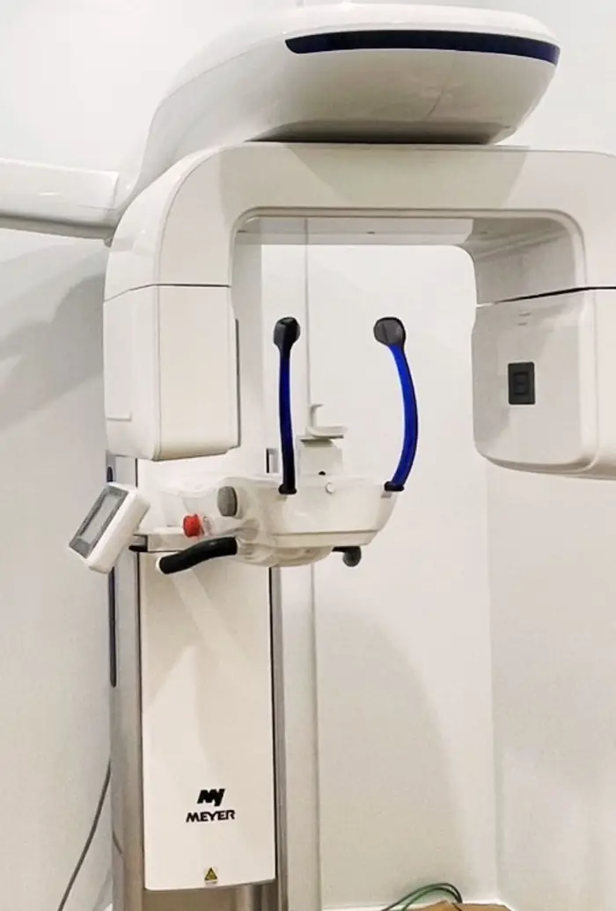
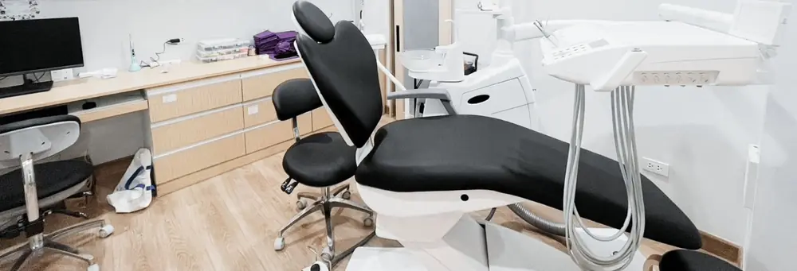
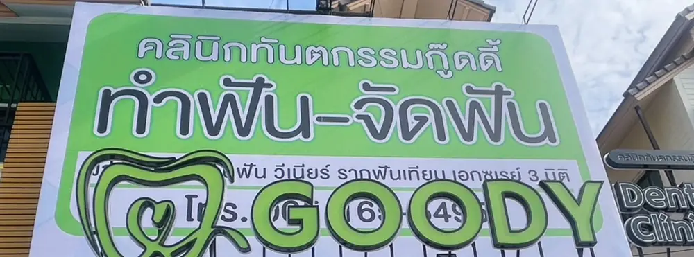

ผ่าฟันคุด หนองปรือ พัทยาที่คลินิกทันตกรรมกู๊ดดี้ ใกล้สี่แยกมิตรกมล
ผ่าฟันคุดและถอนฟันคุด วางแผนจากภาพเอกซเรย์ในคลินิก แจ้งราคาก่อนทำ และใช้สิทธิประกันสังคมเบิกค่าผ่าฟันคุดได้ตามเงื่อนไข
ผ่าฟันคุด ตอบสั้นๆ
- คืออะไร
- การเอาฟันกรามซี่ที่สามที่ขึ้นไม่ได้ตามปกติออก โดยเปิดเหงือกภายใต้ยาชาเฉพาะที่ ถ้าฟันขึ้นเต็มซี่ตรงดีใช้วิธีถอนฟันคุดแทน
- ราคาเริ่มต้น
- 1,500 บาทต่อซี่ ราคาจากเพจ Facebook รอยืนยัน ราคาจริงแจ้งหลังเอกซเรย์
- ประกันสังคม
- ตั้งแต่ 1 พ.ค. 2569 เบิกค่าผ่าฟันคุดได้ 1,500 บาทต่อซี่ กรณีไม่ซับซ้อน และ 2,500 บาทต่อซี่ กรณีต้องกรอกระดูก แยกจากวงเงิน 900 บาทต่อปี บัตรทองไม่ครอบคลุม
- ใช้เวลานานไหม
- เวลาผ่าขึ้นกับความยากของแต่ละซี่ ทันตแพทย์แจ้งหลังดูเอกซเรย์ ปวดบวมมากที่สุด 2 ถึง 3 วันแรก นัดตัดไหมประมาณ 7 วัน
- นัดหมาย
- LINE @goodydentalclinic หรือโทร 065-165-5495 ส่งรูปเอกซเรย์ที่มีอยู่มาก่อนได้
ฟันคุดแบบไหนต้องผ่า
ฟันคุด คือฟันที่ขึ้นมาในช่องปากไม่ได้ตามปกติ เพราะติดฟันซี่ข้างหน้า ติดกระดูก หรือมีเหงือกคลุมอยู่ ส่วนใหญ่เป็นฟันกรามซี่ที่สาม ฟันคุดไม่จำเป็นต้องเอาออกทุกซี่ ทันตแพทย์ตัดสินจากอาการร่วมกับภาพเอกซเรย์
| ลักษณะฟันคุด | ที่เห็นในปาก | ปัญหาที่พบได้ |
|---|---|---|
| ขึ้นตรงแต่ไม่เต็มซี่ | เห็นฟันบางส่วน มีเหงือกคลุม | เศษอาหารติด เหงือกรอบฟันอักเสบ |
| เอียงไปข้างหน้า | มุมฟันชนฟันกรามซี่ที่สอง | ฟันข้างเคียงผุตรงจุดที่ชน |
| นอนตะแคง | มักมองไม่เห็น | กดรากฟันข้างเคียง ปวดเป็นพักๆ |
| ฝังในกระดูกทั้งซี่ | มองไม่เห็น ต้องเอกซเรย์ | ส่วนใหญ่ไม่มีอาการ มักติดตามดู |
ทันตแพทย์มักแนะนำให้เอาออกเมื่อ
- เหงือกรอบฟันคุดบวมหรือเป็นหนองซ้ำหลายครั้ง
- ฟันคุดผุ หรือทำให้ฟันกรามซี่ที่สองผุ
- มีถุงน้ำ ฝีหนอง หรือรากฟันข้างเคียงถูกทำลาย
- เศษอาหารติดซ้ำจนดูแลไม่ได้
- ต้องวางแผนจัดฟันหรือทำฟันปลอม
มักเฝ้าดูได้เมื่อ
- ฟันขึ้นเต็มซี่ ตั้งตรง แปรงได้ทั่ว
- ฝังในกระดูกทั้งซี่ ไม่มีอาการ ไม่มีถุงน้ำ
- อยู่ใกล้เส้นประสาทมาก และการเอาออกเสี่ยงกว่าประโยชน์
เฝ้าดูแปลว่าตรวจฟันและเอกซเรย์ซ้ำตามนัด อ่านเพิ่มที่ ฟันคุด คืออะไร
ผ่าฟันคุดราคาเท่าไหร่ และใช้สิทธิอะไรได้บ้าง
ราคาขึ้นกับตำแหน่งฟัน ความลึก และความใกล้เส้นประสาท ทันตแพทย์ดูเอกซเรย์แล้วแจ้งค่าใช้จ่ายทั้งหมดก่อนเริ่มผ่า
| รายการ | ราคา | หมายเหตุ |
|---|---|---|
| ผ่าฟันคุด ฟันฝังหรือขึ้นเอียง | เริ่มต้น 1,500 | ต่อซี่ ขึ้นกับความยาก |
| ถอนฟันคุด ฟันขึ้นตรง | สอบถาม | แจ้งหลังตรวจ |
| ประกันสังคม ไม่ซับซ้อน | เบิก 1,500 | ต่อซี่ ตั้งแต่ 1 พ.ค. 2569 แยกจากวงเงิน 900 บาทต่อปี |
| ประกันสังคม ต้องกรอกระดูก | เบิก 2,500 | ต่อซี่ ตั้งแต่ 1 พ.ค. 2569 |
| บัตรทอง | ไม่ครอบคลุม | ใช้ได้กับขูดหินปูน อุดฟัน ถอนฟัน |
ถ้าค่าผ่าเกินวงเงินที่เบิกได้ ส่วนต่างชำระเอง เจ้าหน้าที่แจ้งก่อนเริ่มทำ อ่านวิธีใช้สิทธิที่ ประกันสังคม ทำฟัน
ขั้นตอนผ่าฟันคุดที่คลินิกกู๊ดดี้
- ตรวจและเอกซเรย์ตรวจในช่องปาก ถ่ายเอกซเรย์ดูตำแหน่งฟันคุดและเส้นประสาท ใช้เอกซเรย์ 3 มิติเมื่อรากฟันอยู่ใกล้เส้นประสาท
- วางแผนและแจ้งราคาทันตแพทย์อธิบายวิธีทำ ความเสี่ยง และค่าใช้จ่าย ก่อนให้คุณตัดสินใจ
- ฉีดยาชาและผ่าใช้ยาชาเฉพาะที่ เวลาที่ใช้ขึ้นกับความยากของแต่ละซี่
- รับยาและคำแนะนำรับยาตามที่ทันตแพทย์สั่ง พร้อมข้อปฏิบัติหลังผ่า
- นัดตัดไหมประมาณ 7 วันหลังผ่า ทันตแพทย์ตรวจแผลอีกครั้ง


ข้อดีและผลข้างเคียงที่ควรรู้ก่อนผ่า
เมื่อเอาฟันคุดออกแล้ว
- ลดโอกาสปวดหรือเหงือกอักเสบซ้ำจากฟันซี่นั้น
- ทำความสะอาดฟันกรามซี่ข้างเคียงได้ง่ายขึ้น
- ลดความเสี่ยงฟันข้างเคียงผุจากเศษอาหารสะสม
ผลข้างเคียงที่อาจเกิด
- ปวด บวม ช้ำ อ้าปากได้น้อยลง ช่วง 2 ถึง 3 วันแรก
- เลือดซึมจากแผลในวันแรก
- เบ้าฟันแห้ง ปวดมากขึ้นหลังวันที่ 2 ถึง 4 พบบ่อยขึ้นในคนสูบบุหรี่
- แผลติดเชื้อ มีหนอง กลิ่น หรือไข้
- ชาริมฝีปาก คาง หรือลิ้น พบได้น้อย เมื่อรากฟันอยู่ใกล้เส้นประสาท
ดูแลตัวเองหลังผ่าฟันคุด
- กัดผ้าก๊อซให้แน่นตามเวลาที่ทันตแพทย์บอก
- ประคบเย็นที่แก้มใน 24 ชั่วโมงแรก
- งดบ้วนน้ำแรง ดูดหลอด และสูบบุหรี่ในช่วงแรก
- ทานอาหารอ่อน ไม่ร้อนจัด และทานยาตามที่ทันตแพทย์สั่ง
- แปรงฟันได้ตามปกติ เลี่ยงบริเวณแผล
อ่านต่อ ผ่าฟันคุดกี่วันหาย และ ปวดฟันคุด
อาการแบบไหนต้องไปโรงพยาบาลทันที
- บวมลามไปใต้ตา ลำคอ หรือใต้คางอย่างรวดเร็ว
- หายใจลำบาก กลืนลำบาก หรือพูดลำบาก
- ไข้สูง หนาวสั่น อ่อนเพลียมาก
อาการเหล่านี้อาจเป็นการติดเชื้อที่ลุกลาม ไม่ควรรอนัดคลินิก
คนไข้เล่าในเพจ
“ปกติกลัวการทำฟันมากค่ะฝังใจตั้งแต่เด็ก แต่มาคลีนิคนี้คุณหมอใจดี พี่ผู้ช่วยใจดี บรรยากาศชิว ลืมกลัวไปเลย”
คำถามเรื่องผ่าฟันคุด
ผ่าฟันคุดราคาเท่าไหร่
ที่คลินิกทันตกรรมกู๊ดดี้เริ่มต้น 1,500 บาทต่อซี่ ราคาจริงขึ้นกับตำแหน่งและความยากของฟันคุดที่เห็นจากเอกซเรย์ ทันตแพทย์แจ้งค่าใช้จ่ายก่อนเริ่มทำ ราคานี้มาจากเพจ Facebook ของคลินิก รอยืนยัน
ใช้สิทธิประกันสังคมผ่าฟันคุดได้ไหม
ได้ ตั้งแต่ 1 พ.ค. 2569 ผู้ประกันตนมาตรา 33 และ 39 เบิกค่าผ่าฟันคุดแยกจากวงเงินขูด อุด ถอน 900 บาทต่อปี ได้ 1,500 บาทต่อซี่ กรณีไม่ซับซ้อน และ 2,500 บาทต่อซี่ กรณีซับซ้อนที่ต้องกรอกระดูก ทัก LINE ให้เจ้าหน้าที่เช็กสิทธิก่อนนัด
ใช้บัตรทองผ่าฟันคุดได้ไหม
สิทธิบัตรทองที่คลินิกครอบคลุมขูดหินปูน อุดฟัน และถอนฟัน ผ่าฟันคุดไม่อยู่ในสิทธิ ทัก LINE สอบถามค่าใช้จ่ายก่อนได้
ถอนฟันคุดกับผ่าฟันคุดต่างกันอย่างไร
ถอนฟันคุดใช้เมื่อฟันขึ้นพ้นเหงือกเต็มซี่และอยู่ในแนวตรง ส่วนผ่าฟันคุดใช้เมื่อฟันฝังในกระดูกหรือขึ้นเอียง ต้องเปิดเหงือก อาจกรอกระดูกและแบ่งฟันเป็นชิ้นเล็กก่อนนำออก แล้วเย็บแผล ทั้งสองแบบทำภายใต้ยาชาเฉพาะที่
ผ่าฟันคุดเจ็บไหม
ระหว่างผ่าทันตแพทย์ฉีดยาชาเฉพาะที่ จึงมักรู้สึกแรงกดมากกว่าความเจ็บ หลังยาชาหมดอาจปวดและบวมได้ ทันตแพทย์จะจ่ายยาและบอกวิธีดูแลตัวเอง ความรู้สึกแต่ละคนไม่เท่ากัน
ผ่าฟันคุดกี่วันหาย
อาการปวดบวมมักมากที่สุดช่วง 2 ถึง 3 วันแรกแล้วค่อยๆ ดีขึ้น ส่วนใหญ่นัดตัดไหมประมาณ 7 วันหลังผ่า แผลในกระดูกใช้เวลาหายสนิทนานกว่านั้น อ่านเรื่องผ่าฟันคุดกี่วันหาย
เอาฟันคุดออกพร้อมกันหลายซี่ได้ไหม
ได้ในหลายกรณี ทันตแพทย์มักเอาออกข้างเดียวกันบนและล่างในครั้งเดียว เพื่อให้ยังเคี้ยวอีกข้างได้ จำนวนซี่ต่อครั้งขึ้นกับความยากของฟันและสุขภาพของผู้ป่วย
ตั้งครรภ์อยู่ เอาฟันคุดออกได้ไหม
หัตถการที่ไม่เร่งด่วนมักแนะนำให้รอหลังคลอด ถ้ามีอาการอักเสบ ทันตแพทย์จะรักษาอาการก่อนและเลือกยาที่เหมาะกับคนตั้งครรภ์ แจ้งอายุครรภ์ทุกครั้งที่พบทันตแพทย์
ข้อมูลในหน้านี้เป็นความรู้ทั่วไป ไม่ใช่การวินิจฉัย ควรให้ทันตแพทย์ตรวจก่อนตัดสินใจรักษา อ้างอิง NHS Wisdom tooth removal
บริการที่เกี่ยวข้อง
นัดตรวจฟันคุดที่หนองปรือ
คลินิกทันตกรรมกู๊ดดี้ Goody Dental Clinic222/20 ถ.พรประภานิมิต ต.หนองปรือ อ.บางละมุง จ.ชลบุรี 20150
ใกล้สี่แยกมิตรกมล มีที่จอดรถหน้าคลินิก
เปิดทุกวัน ถึง 20.00 น.
| จันทร์ถึงศุกร์ | 10.00 ถึง 20.00 น. |
|---|---|
| เสาร์ อาทิตย์ | 09.30 ถึง 20.00 น. |
ทัก LINE บอกอาการและสิทธิที่ใช้ เจ้าหน้าที่หาคิวให้ หรือโทรถามได้ในเวลาทำการ
เปิดแผนที่ Google Mapsเพจ Facebook
